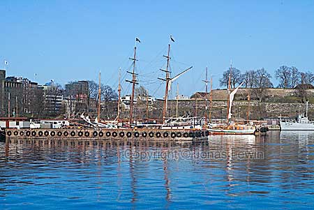
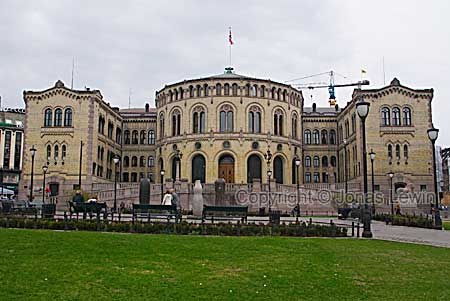
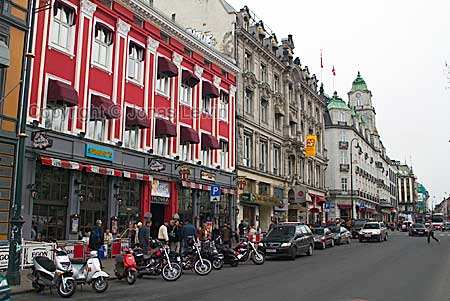
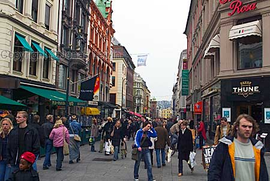
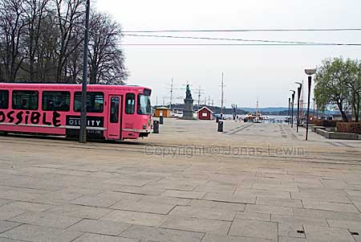
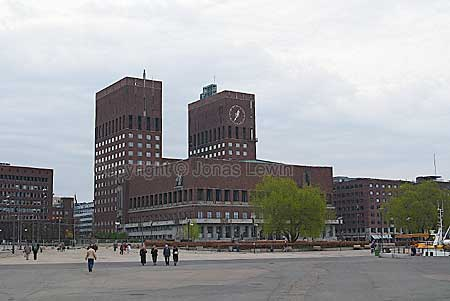
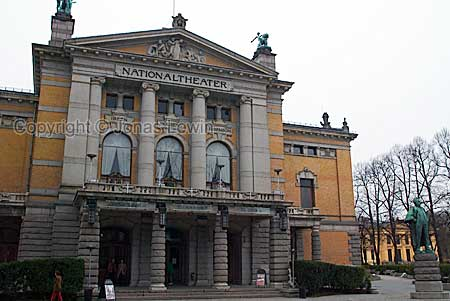
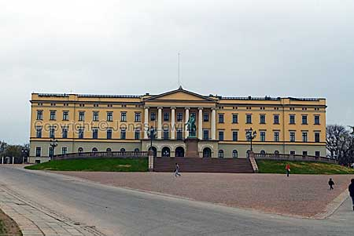

Norway, Oslo, 2003-04.
|
Most of the snow had just melted away, only a few days before I got here. So everybody was out and enjoying the spring. The city center of Oslo is very dense. You can walk around it in 20 minutes. Many large buildings, like this one (Stortinget),... ... hip restaurants, and... many many shops is what I met in Oslo. I also found some unusual trains, like this pink one, on Akerbrygge. Akerbrygge is the cool place where all the hip people wants to go shopping and sit on cafés. The Oslo city hall looks terrible, but they have really nice view from their windows, as they are looking down on Akerbrygge. The National Theatre is one of the more appealing old large buildings in the city centre. And then we have the large royal castle. I liked the people in Oslo, but the
city itself is in real need of a face lift. |